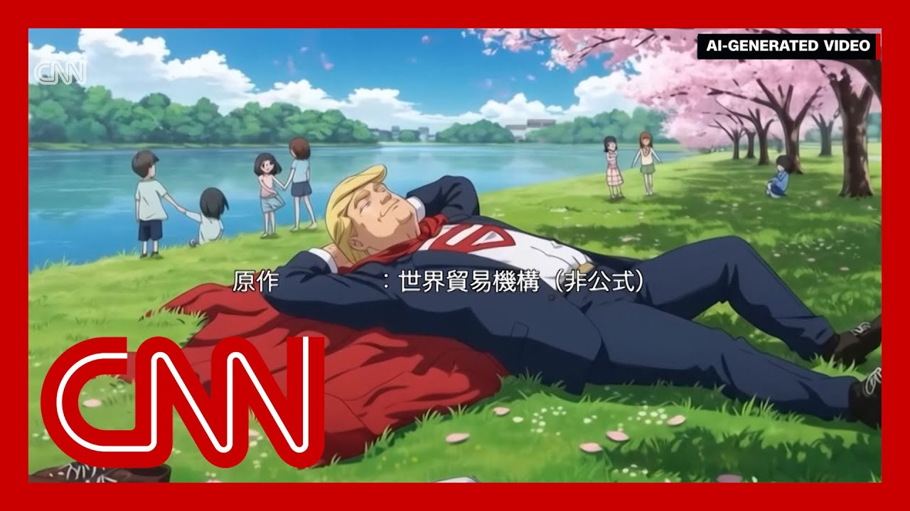

【美国对钢铁和铝进口的新关税几小时前生效，税率从25%翻倍至50%。处境艰难的美国钢铁行业对特朗普政府的最新举措表示欢迎，但依赖这些金属的其他行业警告称，从汽车销售到超市货架，价格将全面上涨。不过，成本何时以及如何转嫁给消费者尚不明确。与此同时，特朗普团队要求所有与美国有贸易往来的国家在今天截止前提交贸易提案。白宫称这封信是提醒各国截止日期临近的“友好通知”。美中贸易紧张局势仍在升级，中国官媒借助AI技术对特朗普发起新攻势。CNN的Will Ripley报道称，这段AI生成的“反派特朗普”视频在中国疯传，将美国总统描绘成挥舞关税武器的“超级英雄”。这是近期多部嘲讽特朗普贸易战政策的AI视频之一，部分由央视英语频道制作，指责其关税导致美国通胀和全球动荡。视频呼应了中国外交部在推特上的立场，称美方单边关税“未解决任何问题，反而严重破坏国际经济贸易秩序”。新华社的AI动画则塑造了名为“关税”的机器人，最终选择自毁而非执行加税指令。此类AI视频数月来充斥中国严格管控的社交媒体平台，旨在传递“美国在贸易战中自食其果且节节败退”的叙事。中国统计局数据显示出口仍在增长（部分因关税生效前的订单激增），但外界常质疑其数据真实性。一家纺织厂负责人称已调整战略：“贸易战让我意识到美国只是全球市场的一小部分。”中国外交部长王毅会见美国新任大使时强调中美关系处于关键阶段，中方通报称大使提及特朗普“高度尊重习近平”。目前由日内瓦斡旋的90天贸易休战期正在瓦解，双方互相指责对方破坏协议，涉及稀土出口限制、技术制裁和留学生签证禁令等报复措施。CNN经济分析师Rana Foroohar指出，特朗普与习近平均面临不能示弱的政治压力，但中国当前难以让步。她批评特朗普“分而治之”的贸易策略，并警告若高关税持续，债市恐将崩溃。】
Summary: New tariffs on steel and aluminum imports to the US kicked in a few hours ago, now doubling to 50%.
摘要： 美国对钢铁和铝进口的新关税几小时前生效，税率从25%翻倍至50%。

⏱️ Estimated Reading Time: 15 min
📚 高考3500生词 📚 雅思生词 📚 托福生词 📚 GRE生词 📚 UP主自用生词
The struggling US steel industry is applauding this latest broadside from the Trump administration.
处境艰难的美国钢铁行业对特朗普政府的最新举措表示欢迎。
But other sectors that rely on the metals are warning of price hikes everywhere, from car lots to grocery store shelves.
但依赖这些金属的其他行业警告称，从汽车销售到超市货架，价格将全面上涨。
Although it's not entirely clear how or when the costs will be passed onto consumers.
不过，成本何时以及如何转嫁给消费者尚不明确。
Meanwhile, the Trump team has asked all countries that trade with the U.S. to submit trade proposals by the end of today.
与此同时，特朗普团队要求所有与美国有贸易往来的国家在今天截止前提交贸易提案。
The white House called the letter that went out a friendly reminder that the deadline is coming up.
白宫称这封信是提醒各国截止日期临近的“友好通知”。
Meanwhile, trade tensions between the US and China are still flaring as Chinese state media is taking some new swipes at President Trump with the help of AI.
美中贸易紧张局势仍在升级，中国官媒借助AI技术对特朗普发起新攻势。
CNN's Will Ripley explains.
CNN的Will Ripley报道称。
This AI generated enemy is going viral in China, portraying U.S. President Donald Trump as a tariff wielding superhero.
这段AI生成的“反派特朗普”视频在中国疯传，将美国总统描绘成挥舞关税武器的“超级英雄”。
It's one of several recent videos mocking Trump's trade war policies, many of them created with AI, which actually try to blend Western in you.
这是近期多部嘲讽特朗普贸易战政策的AI视频之一。
John Smart, China's English language broadcaster, produced this video blaming Trump's tariffs for U.S. inflation and global instability.
央视英语频道制作的视频指责其关税导致美国通胀和全球动荡。
The video echoes Beijing's official stance on Twitter.
视频呼应了中国外交部在推特上的立场。
Since the U.S. imposition of the unilateral tariff measures, it has not resolved any of its own issues, she says, and has instead severely undermined the international economic and trade order.
称美方单边关税“未解决任何问题，反而严重破坏国际经济贸易秩序”。
China's Xinhua News Agency produced this AI animation, featuring a robot named tariff, programed to impose trade restrictions and now choose death to end the harm.
新华社的AI动画塑造了名为“关税”的机器人，最终选择自毁而非执行加税指令。
Please don't do this.
请不要这样做。
Goodbye, Doctor Mallory.
再见，马洛里博士。
The robot self-destructs rather than obey orders to raise tariffs.
机器人选择自毁而非服从加税指令。
AI generated clips like these showing Trump and Elon Musk hard at work, and factories have been flooding.
此类AI视频数月来充斥中国严格管控的社交媒体平台。
China's tightly controlled social media platforms for months, all untouched by Beijing's army of online censors.
（接上句）均未受到网络审查部门的干预。
Designed to push China's narrative.
旨在传递“美国在贸易战中自食其果且节节败退”的叙事。
The U.S. is making a fool of itself and, more importantly, losing ground to China in the global trade war.
美国正自取其辱，更重要的是在全球贸易战中败给中国。
President Trump started social work with a worm on a cliff.
特朗普总统的贸易政策如同悬崖边的蠕虫（注：此处直译保留原文隐喻）。
China's foreign trade has been able to withstand the difficulties, he says, maintaining steady growth and showing strong resilience to maintain competitiveness on the international front.
他表示中国外贸顶住压力“保持稳定增长，展现出强劲韧性”。
China's Bureau of Statistics put out numbers claiming exports are actually rising despite the trade war, partially due to a surge in orders before the tariffs kicked in.
中国统计局数据显示出口仍在增长（部分因关税生效前的订单激增）。
Outside observers often question the accuracy of China's numbers, which are impossible to independently verify.
但外界常质疑其数据真实性。
At this Chinese textile plant, the director says, the US no longer dominates their strategy.
一家纺织厂负责人称已调整战略。
More designs.
更多设计。
So what will come in the trade war made me realize the US is just a small part of the global market, he says.
“贸易战让我意识到美国只是全球市场的一小部分。”
We'd rather bring Chinese products to the rest of the world reasonably priced, high quality and let more people benefit.
“我们更愿将优质平价的中国产品带给世界。”
China's top diplomat is also firing back.
中国外交部长王毅也予以回击。
Wang Yi reportedly telling new U.S. Ambassador David Perdue the US-China relationships are at a critical juncture.
据报道，王毅向美国新任大使表示中美关系处于关键阶段。
The Chinese readout of the meeting also says David Perdue stated that President Trump greatly respects President XI Jinping.
中方通报称大使提及特朗普“高度尊重习近平”。
Far from tough talk, China claims ahead of that likely crucial call between Trump and XI.
在特朗普与习近平即将通话前，中方表态并未展现强硬姿态。
They sure do have a lot to talk about.
双方确实有许多议题待讨论。
The 90 day trade truce brokered in Geneva is unraveling right now.
日内瓦斡旋的90天贸易休战期正在瓦解。
At stake rare earth minerals vital for U.S. tech and defense, which China is still restricting.
涉及稀土出口限制等关键领域。
Washington's latest retaliatory moves include tech sanctions and student visa bans.
美方最新反制包括技术制裁和留学生签证禁令。
Both sides are now accusing the other of undermining the agreement, which is putting global markets and supply chains on edge.
双方互相指责对方破坏协议，令全球市场与供应链承压。
Will Ripley, CNN, Taipei.
CNN记者Will Ripley台北报道。
New U.S. tariffs on steel and aluminum imports are now in effect.
美国对钢铁和铝进口的新关税现已生效。
President Donald Trump signed an executive order on Tuesday, doubling the towers on 25% to 50%.
特朗普总统周二签署行政令将税率从25%提升至50%。
Critics warn this could lead to higher prices on everything from cars and appliances to electrical equipment and even groceries.
批评者警告这将推高从汽车、家电到电子设备乃至食品的价格。
But the US president insists the action will boost manufacturing jobs.
但美国总统坚称此举将提振制造业就业。
Meanwhile, the US trade representative has told all countries that trade with the United States to submit their best trade proposals by Wednesday.
同时美国贸易代表要求所有贸易伙伴在周三前提交最佳贸易提案。
USTR sent this letter to all of our trading partners just to give them a friendly reminder that the deadline is coming up and they are in talks, ambassador Greer, Secretary Bessa and Secretary Linick are in talks with many of our key trading partners around the globe.
贸易代表办公室发信“友好提醒”截止日期临近，多位官员正与主要贸易伙伴磋商。
As you know, Brian, I know the Wall Street Journal has covered this quite heavily.
正如《华尔街日报》广泛报道的那样。
and they continue to be engaged in those discussions.
相关讨论仍在持续进行。
And this letter was simply to remind these countries that the deadline is approaching and the president expects good deals, and we are on track for that.
此信旨在提醒各国总统期待达成有利协议。
I will emphasize two New York now and Rana Foroohar, CNN Global economic analyst.
CNN全球经济分析师Rana Foroohar将进行解读。
She is also a global business columnist and associate editor with the Financial Times.
她同时是《金融时报》专栏作家兼副主编。
Good to have you with us.
欢迎您的参与。
Great to be here.
很高兴来到这里。
So ahead of a much anticipated phone call between President Donald Trump and his Chinese counterpart, XI Jinping, China is mocking Trump, saying he's losing his own trade war with Beijing and portraying the U.S. as increasingly isolated economically after Trump previously criticized China.
在特朗普与习近平通话前，中方嘲讽特朗普“正在输掉贸易战”，并描绘美国经济日益孤立的形象。
So where do you see this going, and how might this back and forth impact the outcome of that critical phone call?
您认为事态将如何发展？这种交锋会如何影响关键通话结果？
Well, it's interesting.
这个问题很有趣。
I mean, you know, there are the facts on the ground about trade, and then there are the psychologies of the leaders of the US and China.
贸易现实与两国领导人的心理博弈并存。
And, you know, I would say that in some ways, Donald Trump and XI Jinping have a few things in common.
特朗普与习近平确有某些相似之处。
They're both quite nationalistic.
他们都具有强烈民族主义倾向。
they tend to, like things to go their way.
倾向于让事态按自身意愿发展。
you know, these are two powerful leaders that are squaring off, and neither of them can really afford politically to be seen as being weak.
两位强势领导者都无法承受示弱带来的政治代价。
you know, weakness, and the perception of political loss is something that's completely unacceptable.
政治失败的形象是完全不可接受的。
Trump we've seen that again and again.
这在特朗普身上屡见不鲜。
And China is at a moment where, the it really can't afford to be seen to be kowtowing to Donald Trump.
中国此刻也绝不能被视为向特朗普低头。
So I think XI Jinping is in a position where, you know, even if he wasn't naturally inclined to play it tough, I think politically it's, you know, difficult at this moment for China to back down in the face of, of Trump's tariffs war and just weeks away from the deadline for the 90 day pause on tariffs.
因此习近平即便本性不强硬，当前政治环境下中国也难以在关税战前让步。
The white House says that President Trump has sent out letters to major US trading partners demanding their best offers by the end of today, Wednesday, calling this a friendly reminder in an apparent effort to get deals done before that July 8th deadline.
白宫称特朗普已向主要贸易伙伴发信要求今日提交最优报价，试图在7月8日前达成协议。
What's your response to this method of making trade deals?
您如何看待这种谈判方式？
Well, I think Trump's strategy has always been to divide and conquer.
特朗普一贯采取“分而治之”策略。
you know, he looks for who's weak in any given trading block, tries to sort of pull, weaker nations apart from their natural blocks.
试图从贸易集团中分化较弱成员。
I mean, in some ways, you can look at the trade deal that's been cut with the UK and say, well, shouldn't the UK's natural, alliance be with Europe post-Brexit?
例如英国脱欧后本应与欧盟结盟，却与美国达成贸易协议。
Of course, that's not the case.
这显然违背常理。
but I think, one of the things that Trump likes to do is to really kind of separate nations out and, and really try and make them negotiate on their own.
特朗普热衷于迫使各国单独谈判。
I've been a little bit surprised, frankly, that we haven't seen more open alliance making between countries outside the US.
令人惊讶的是非美国家未形成更公开的联盟。
I'm surprised we haven't seen China and the European Union, for example, coming out with some, shared talking points or shared approaches to Trump.
例如中欧本可共同应对特朗普。
that to me would be the way to, to deal with with the US president, but we haven't seen yet.
这才是应对美国总统的有效方式。
And Donald Trump posted on Truth Social Tuesday that quote, because of tariffs, our economy is booming.
特朗普周二在Truth Social发文称“关税正推动经济繁荣”。
As an economist yourself, what do you say to that, particularly after the OECD just slashed its U.S. growth forecast, bringing global expectations down with it?
作为经济学家，您如何评价？尤其经合组织刚下调美国增长预期。
Yeah, it's it's really kind of tragic, Rosemary, because, you know, the U.S. had the strongest recovery in the post-Covid world.
这实属悲剧——美国本拥有疫情后最强劲复苏。
I mean, we really were the envy of the rest of the world coming out of the pandemic over the last few years, that's been squandered.
这种优势已被挥霍殆尽。
you know, the U.S. economy has been strong.
美国经济曾确实强劲。
It has been robust jobs numbers are still pretty good.
就业数据仍相对良好。
Amazing, you know, despite everything.
尽管面临诸多挑战。
But absolutely, the OECD is saying, by the end of 2025 and into 2026, we are going to see growth.
但经合组织预测2025年底至2026年增长将放缓。
That's about half of what it was, over the last few years.
增速约为过去数年的一半。
So that's that's a big blow.
这是重大打击。
And the U.S. is coming in way weaker than many other countries.
美国表现将远逊于多数国家。
So it's it's as though the tables have been turned really in this administration.
本届政府任内形势已然逆转。
And, Ronald, we're also hearing warnings about a crack in the bond market, a JP Morgan Chase CEO, Jamie Dimon, warning of panic.
摩根大通CEO戴蒙警告债市恐现恐慌性崩盘。
When that happens, is it too late to stop that from happening if the trade war drags on?
若贸易战持续，是否将无力回天？
Boy, you know, I think if we see high double digit tariffs, if we see on again off again legal remedies, I think the bond market is is going to crack.
若出现两位数关税或反复的法律救济措施，债市必将崩溃。
we've already seen this happening and it's going to be very difficult for the fed to lower interest rates at this point given the tariffs.
鉴于关税影响，美联储降息将极为困难。
They're coming.
压力正在显现。
We hear them being felt, you know, in middle America and else and other parts of the world.
美国中部及全球其他地区已感受到冲击。
And with inflation the way it's looking like it's going to be, it's going to be really, really hard to lower rates.
通胀形势使得降息空间极其有限。
That puts pressure on the US government.
这将加剧美国政府压力。
It makes debt more expensive at a time when there are fewer foreign buyers for U.S. Treasury bills.
美债外国买家减少之际推高借贷成本。
The bond market doesn't like any of this, and it doesn't like the uncertainty.
债市厌恶这种不确定性。
And you mentioned the debt.
您提到债务问题。
I mean, billionaire Elon Musk is publicly breaking with President Trump calling his big, beautiful bill a disgusting abomination because it will add nearly $4 trillion to the national debt.
马斯克公开反对特朗普，斥其法案将增加4万亿美元国债。
How damaging could Trump's spending bill be if it gets through the Senate?
若该支出法案通过参议院将造成多大危害？
In its current form?
以当前形式？
Well, very damaging.
危害极大。
the rule of thumb is that you want to spend when there's a crisis, which is what happened during Covid.
常规做法是在危机时期增加支出（如疫情期间）。
You saw the Biden administration really pouring money into the economy.
拜登政府曾大规模注资经济。
That's why we had such a robust recovery.
这才实现强劲复苏。
But then you need to use the good times to really scale back, and instead we're doing just the opposite.
但应在经济向好时缩减支出，而我们反其道而行。
We're giving billionaires a tax break and wrecking our deficit picture.
为富豪减税的同时恶化赤字状况。
Rana Foroohar, many thanks for joining us.
感谢Rana Foroohar的分享。